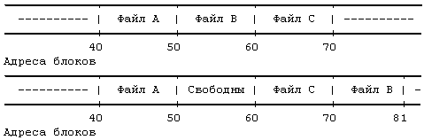
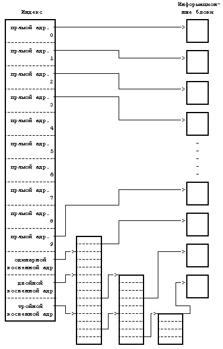
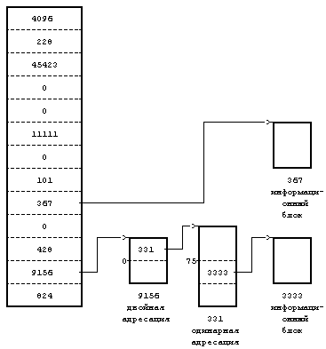

Как уже говорилось, индекс включает в себя таблицу адресов расположения информации файла на диске. Так как каждый блок на диске адресуется по своему номеру, в этой таблице хранится совокупность номеров дисковых блоков. Если бы данные файла занимали непрерывный участок на диске (то есть файл занимал бы линейную последовательность дисковых блоков), то для обращения к данным в файле было бы достаточно хранить в индексе адрес начального блока и размер файла. Однако, такая стратегия размещения данных не позволяет осуществлять простое расширение и сжатие файлов в файловой системе без риска фрагментации свободного пространства памяти на диске. Более того, ядру пришлось бы выделять и резервировать непрерывное пространство в файловой системе перед выполнением операций, могущих привести к увеличению размера файла.

Рисунок 4.5. Размещение непрерывных файлов и фрагментация свободного пространства
Предположим, например, что пользователь создает три файла, A, B и C, каждый из которых занимает 10 дисковых блоков, а также что система выделила для размещения этих трех файлов непрерывное место. Если потом пользователь захочет добавить 5 блоков с информацией к среднему файлу, B, ядру придется скопировать файл B в то место в файловой системе, где найдется окно размером 15 блоков. В дополнение к затратам ресурсов на проведение этой операции дисковые блоки, занимаемые информацией файла B, станут неиспользуемыми, если только они не понадобятся файлам размером не более 10 блоков (Рисунок 4.5). Ядро могло бы минимизировать фрагментацию пространства памяти, периодически запуская процедуры чистки памяти, уплотняющие имеющуюся память, но это потребовало бы дополнительного расхода временных и системных ресурсов.
В целях повышения гибкости ядро присоединяет к файлу по одному блоку, позволяя информации файла быть разбросанной по всей файловой системе. Но такая схема размещения усложняет задачу поиска данных. Таблица адресов содержит список номеров блоков, содержащих принадлежащую файлу информацию, однако простые вычисления показывают, что линейным списком блоков файла в индексе трудно управлять. Если логический блок занимает 1 Кбайт, то файлу, состоящему из 10 Кбайт, потребовался бы индекс на 10 номеров блоков, а файлу, состоящему из 100 Кбайт, понадобился бы индекс на 100 номеров блоков. Либо пусть размер индекса будет варьироваться в зависимости от размера файла, либо пришлось бы установить относительно жесткое ограничение на размер файла.
Для того, чтобы небольшая структура индекса позволяла работать с большими файлами, таблица адресов дисковых блоков приводится в соответствие со структурой, представленной на Рисунке 4.6. Версия V системы UNIX работает с 13 точками входа в таблицу адресов индекса, но принципиальные моменты не зависят от количества точек входа. Блок, имеющий пометку "прямая адресация" на рисунке, содержит номера дисковых блоков, в которых хранятся реальные данные. Блок, имеющий пометку "одинарная косвенная адресация", указывает на блок, содержащий список номеров блоков прямой адресации. Чтобы обратиться к данным с помощью блока косвенной адресации, ядро должно считать этот блок, найти соответствующий вход в блок прямой адресации и, считав блок прямой адресации, обнаружить данные. Блок, имеющий пометку "двойная косвенная адресация", содержит список номеров блоков одинарной косвенной адресации, а блок, имеющий пометку "тройная косвенная адресация", содержит список номеров блоков двойной косвенной адресации.
В принципе, этот метод можно было бы распространить и на поддержку блоков четверной косвенной адресации, блоков пятерной косвенной адресации и так далее, но на практике оказывается достаточно имеющейся структуры. Предположим, что размер логического блока в файловой системе 1 Кбайт и что номер блока занимает 32 бита (4 байта). Тогда в блоке может храниться до 256 номеров блоков. Расчеты показывают (Рисунок 4.7), что максимальный размер файла превышает 16 Гбайт, если использовать в индексе 10 блоков прямой адресации и 1 одинарной косвенной адресации, 1 двойной косвенной адресации и 1 тройной косвенной адресации. Если же учесть, что длина поля "размер файла" в индексе - 32 бита, то размер файла в действительности ограничен 4 Гбайтами (2 в степени 32).
Процессы обращаются к информации в файле, задавая смещение в байтах. Они рассматривают файл как поток байтов и ведут подсчет байтов, начиная с нулевого адреса и заканчивая адресом, равным размеру файла. Ядро переходит от байтов к блокам: файл начинается с нулевого логического блока и заканчивается блоком, номер которого определяется исходя из размера файла. Ядро обращается к индексу и превращает логический блок, принадлежащий файлу, в соответствующий дисковый блок. На Рисунке 4.8 представлен алгоритм bmap пересчета смещения в байтах от начала файла в номер физического блока на диске.

Рисунок 4.6. Блоки прямой и косвенной адресации в индексе
10 блоков прямой адресации по 1 Кбайту каждый = 10 Кбайт
1 блок косвенной адресации с 256 блоками прямой
адресации = 256 Кбайт
1 блок двойной косвенной адресации с 256 блоками
косвенной адресации = 64 Мбайта
1 блок тройной косвенной адресации с 256 блоками
двойной косвенной адресации = 16 Гбайт
|
Рисунок 4.7. Объем файла в байтах при размере блока 1 Кбайт
алгоритм bmap /* отображение адреса смещения в байтах от
начала логического файла на адрес блока
в файловой системе */
входная информация: (1) индекс
(2) смещение в байтах
выходная информация: (1) номер блока в файловой системе
(2) смещение в байтах внутри блока
(3) число байт ввода-вывода в блок
(4) номер блока с продвижением
{
вычислить номер логического блока в файле исходя из
заданного смещения в байтах;
вычислить номер начального байта в блоке для ввода-
вывода; /* выходная информация 2 */
вычислить количество байт для копирования пользова-
телю; /* выходная информация 3 */
проверить возможность чтения с продвижением, пометить
индекс; /* выходная информация 4 */
определить уровень косвенности;
выполнить (пока уровень косвенности другой)
{
определить указатель в индексе или блок косвенной
адресации исходя из номера логического блока в
файле;
получить номер дискового блока из индекса или из
блока косвенной адресации;
освободить буфер от данных, полученных в резуль-
тате выполнения предыдущей операции чтения с
диска (алгоритм brelse);
если (число уровней косвенности исчерпано)
возвратить (номер блока);
считать дисковый блок косвенной адресации (алго-
ритм bread);
установить номер логического блока в файле исходя
из уровня косвенности;
}
}
|
Рисунок 4.8. Преобразование адреса смещения в номер блока в файловой системе
Рассмотрим формат файла в блоках (Рисунок 4.9) и предположим, что дисковый блок занимает 1024 байта. Если процессу нужно обратиться к байту, имеющему смещение от начала файла, равное 9000, в результате вычислений ядро приходит к выводу, что этот байт располагается в блоке прямой адресации с номером 8 (начиная с 0). Затем ядро обращается к блоку с номером 367; 808-й байт в этом блоке (если вести отсчет с 0) и является 9000-м байтом в файле. Если процессу нужно обратиться по адресу, указанному смещением 350000 байт от начала файла, он должен считать блок двойной косвенной адресации, который на рисунке имеет номер 9156. Так как блок косвенной адресации имеет место для 256 номеров блоков, первым байтом, к которому будет получен доступ в результате обращения к блоку двойной косвенной адресации, будет байт с номером 272384 (256К + 10К); таким образом, байт с номером 350000 будет иметь в блоке двойной косвенной адресации номер 77616. Поскольку каждый блок одинарной косвенной адресации позволяет обращаться к 256 Кбайтам, байт с номером 350000 должен располагаться в нулевом блоке одинарной косвенной адресации для блока двойной косвенной адресации, а именно в блоке 331. Так как в каждом блоке прямой адресации для блока одинарной косвенной адресации хранится 1 Кбайт, байт с номером 77616 находится в 75-м блоке прямой адресации для блока одинарной косвенной адресации, а именно в блоке 3333. Наконец, байт с номером в файле 350000 имеет в блоке 3333 номер 816.

Рисунок 4.9. Размещение блоков в файле и его индексе
При ближайшем рассмотрении Рисунка 4.9 обнаруживается, что несколько входов для блока в индексе имеют значение 0 и это значит, что в данных записях информация о логических блоках отсутствует. Такое имеет место, если в соответствующие блоки файла никогда не записывалась информация и по этой причине у номеров блоков остались их первоначальные нулевые значения. Для таких блоков пространство на диске не выделяется. Подобное расположение блоков в файле вызывается процессами, запускающими системные операции lseek и write (см. следующую главу). В следующей главе также объясняется, каким образом ядро обрабатывает системные вызовы операции read, с помощью которой производится обращение к блокам.
Преобразование адресов с большими смещениями, в частности с использованием блоков тройной косвенной адресации, является сложной процедурой, требующей от ядра обращения уже к трем дисковым блокам в дополнение к индексу и информационному блоку. Даже если ядро обнаружит блоки в буферном кеше, операция останется дорогостоящей, так как ядру придется многократно обращаться к буферному кешу и приостанавливать свою работу в ожидании снятия блокировки с буферов. Насколько эффективен этот алгоритм на практике? Это зависит от того, как используется система, а также от того, кто является пользователем и каков состав задач, вызывающий потребность в более частом обращении к большим или, наоборот, маленьким файлам. Однако, как уже было замечено [Mullender 84], большинство файлов в системе UNIX имеет размер, не превышающий 10 Кбайт и даже 1 Кбайта ! (*) Поскольку 10 Кбайт файла располагаются в блоках прямой адресации, к большей части данных, хранящихся в файлах, доступ может производиться за одно обращение к диску. Поэтому в отличие от обращения к большим файлам, работа с файлами стандартного размера протекает быстро.
В двух модификациях только что описанной структуры индекса предпринимается попытка использовать размерные характеристики файла. Основной принцип в реализации файловой системы BSD 4.2 [McKusick 84] состоит в том, что чем больше объем данных, к которым ядро может получить доступ за одно обращение к диску, тем быстрее протекает работа с файлом. Это свидетельствует в пользу увеличения размера логического блока на диске, поэтому в системе BSD разрешается иметь логические блоки размером 4 или 8 Кбайт. Однако, увеличение размера блоков на диске приводит к увеличению фрагментации блоков, при которой значительные участки дискового пространства остаются неиспользуемыми. Например, если размер логического блока 8 Кбайт, тогда файл размером 12 Кбайт занимает 1 полный блок и половину второго блока. Другая половина второго блока (4 Кбайта) фактически теряется; другие файлы не могут использовать ее для хранения данных. Если размеры файлов таковы, что число байт, попавших в последний блок, является равномерно распределенной величиной, то средние потери дискового пространства составляют полблока на каждый файл; объем теряемого дискового пространства достигает в файловой системе с логическими блоками размером 4 Кбайта 45% [McKusick 84]. Выход из этой ситуации в системе BSD состоит в выделении только части блока (фрагмента) для размещения оставшейся информации файла. Один дисковый блок может включать в себя фрагменты, принадлежащие нескольким файлам. Некоторые подробности этой реализации исследуются на примере упражнения в главе 5.
Второй модификацией рассмотренной классической структуры индекса является идея хранения в индексе информации файла (см. [Mullender 84]). Если увеличить размер индекса так, чтобы индекс занимал весь дисковый блок, небольшая часть блока может быть использована для собственно индексных структур, а оставшаяся часть - для хранения конца файла и даже во многих случаях для хранения файла целиком. Основное преимущество такого подхода заключается в том, что необходимо только одно обращение к диску для считывания индекса и всей информации, если файл помещается в индексном блоке.
(*) На примере 19978 файлов Маллендер и Танненбаум говорят, что приблизительно 85% файлов имеют размер менее 8 Кбайт и 48% - менее 1 Кбайта. Несмотря на то, что эти данные варьируются от одной реализации системы к другой, для многих реализаций системы UNIX они показательны.
Предыдущая глава || Оглавление || Следующая глава